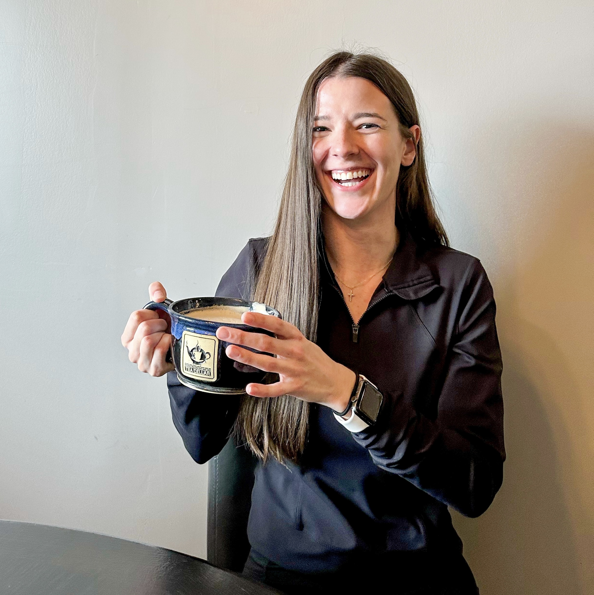

About Iowan Foodie
Iowan Foodie is your ultimate guide to celebrating, sharing, and experiencing the vibrant food scene in Iowa and beyond.
Iowan Foodie, Emma, is passionate about discovering the best dining experiences, from local favorites to hidden gems. My mission is to showcase Iowa's diverse food scene, highlight local businesses, and provide honest reviews and recommendations.
And yes, I mean honest reviews. Think of me as your food-loving friend who’ll give it to you straight—because even our taste buds deserve the truth!
I believe in supporting local businesses and building a strong community. By sharing the stories behind each dish and establishment, I strive connect people through a shared love of great food and local spirit.